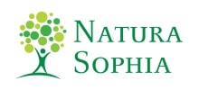
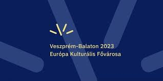
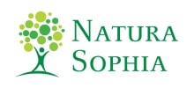
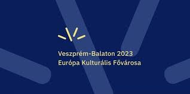

Az euritmia az egész test mozgásával, a tér és idő világában teszi láthatóvá a hangzó beszédet vagy a zenét. Ha az ember az egész testével beszél és énekel, a szó, a zene újra tetté, teremtő erővé válik.
Cikkek az euritmiáról
Gyógyeuritmia
A gyógyeuritmát dr. Rudolf Steiner dolgozta ki 1921-ben. Az euritmán alapszik és lényeges alkotórésze az antropozófiai orvoslás rendszerének, amely mind a természettudományos, mind az antropozófiai-szellemtudományos ismereteket magában foglalja.
Artemisz Euritmia Színpad
Az Artemisz Euritmia Színpad nevét 2010-ben kapta. Az alkalmat egy zenetanárnő meghívása szülte, aki egy továbbképzésen ismerkedett meg az euritmával, s ez olyannyira megtetszett neki, hogy mindenekelőtt szerette volna városában, Százhalombattán is megismertetni.
Száz éves az euritmia
Éppen száz évvel ezelőtt, 1912-ben született meg egy új mozgásművészet, az euritmia, amelyet Rudolf Steiner az első Goetheanum építésével párhuzamosan dolgozott ki. A 18 éves Lory-Maier Smits valamilyen ritmikus táncot keresett és édesanyja Rudolf Steiner tanácsát kérte, aki mintha várta volna a kérdést és megkezdődött új mozgásművészet kidolgozása.
„Testből font jelbeszéd”
Az euritmia egyfajta mozgásművészet. Maga a szó görög eredetű, jelentése jó, szép ritmus. Rudolf Steiner az 1910-es években indította útjára, s azóta művészeti, pedagógiai és gyógyító ága egyaránt termékeny.
Látható beszéd és ének
„Oly csend, amely a fényből éled
S csendülve alkot dallamot,
Oly csend hirdesse: sose téved
A változó alakzatok
Sodrában aki nem mulandó Formákon tiszta szemmel ámul:
Mivel az üdvösség honát
Örök ámulat hatja át.”
(Mezei Balázs)
Linkek
Bagdy Emőke: Az euritmia alapjai
„Az euritmia természetes mozgásforma a gyermekek számára.”
Azt mondtad: Euritmia?
Gyógyító hangok
Galéria
Külföldről támogatott szervezetnek minősülünk!
Nagy örömünkre szolgál, hogy működésünket külföldi szervezetek is támogatják, melynek következtében a Magyar Euritmia-Mozgásművészeti Társaság a 2017. évi LXXVI. törvény alapján külföldről támogatott szervezetnek minősül.
Köszönjük a minket támogató szervezetek adományait!
Külföldi támogatóink:
Freunde der Erziehungskunst, Hauserstiftung, Verein zur Förderung Anthroposophischer Art und Kunst
Köszönjük a belföldi szervezetek támogatását is:
Dm Hungary Kft.
 


